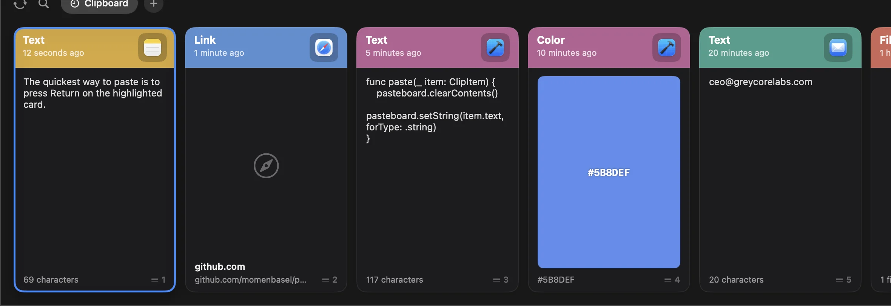

A home for repeat pastes.
Keep addresses, replies, code, and other reusable clips in named pinboards. Search the rest of your history as you type.
Text, rich text, links, images, files, and colors.
Your Mac's clipboard, remembered
Find yesterday's link, pin a useful snippet, and bring any clip back with a keystroke. Free and open source.

Keep addresses, replies, code, and other reusable clips in named pinboards. Search the rest of your history as you type.
Text, rich text, links, images, files, and colors.
Press ⇧⌘V to open Pesty, type to search, then use the arrows and Return to choose a clip.
Quick-pick the first nine with ⌘1 to ⌘9.
Edit a clip, paste plain text or Markdown, and drag content into another app or Finder.
Select several clips with Command-click or Shift-click.
Exclude apps, pause capture, and choose retention by count or age. Undo a clip deletion for up to five minutes.
Clips marked concealed by password managers are skipped.
A menu-bar utility that stays close to the way you already work.
Pesty records supported clipboard content while capture is running.
Open the strip with ⇧⌘V. Search, browse, or switch to a pinboard.
The direct build can paste with Accessibility permission. In the App Store build, choose a clip, then press ⌘V.
The GitHub and Homebrew builds are free. Both support macOS 14 or later on Apple Silicon and Intel.
Open the signed, notarized DMG, drag Pesty to Applications, and launch it from there.
Download for MacEnable Accessibility in System Settings for direct pasting.
Review and add the maintainer's tap. On Homebrew 7, trust the tap before installing.
brew tap momenbasel/pesty
brew trust --tap momenbasel/pesty
brew install --cask momenbasel/pesty/pestyAn optional paid edition supports development. It is sandboxed: choose a clip, return to your app, and press ⌘V.
View on App StoreCheck the store for local pricing and availability.
Pesty has no developer-run clipboard servers, ads, or analytics. Local history uses restricted file permissions. Sync behavior depends on the edition you install.
History stays local unless you enable iCloud Drive sync. Sync is off by default.
Uses your private iCloud database through CloudKit. Sync is enabled by default and can be turned off in Settings.
Yes. Download the app from GitHub or install it with Homebrew for free, under the MIT license. The Mac App Store edition has an optional one-time purchase and different paste and sync behavior.
Image previews, an editable search field, clip editing, drag-and-drop, multi-select, retention controls, and undo for deletions. See the release notes for the full list.
The direct and Homebrew builds use Accessibility permission to paste into another app. If you prefer, disable direct pasting and use ⌘V yourself. The sandboxed Mac App Store edition uses this copy-and-switch flow without Accessibility permission.
Clips marked concealed or transient are skipped. Pesty cannot recognize every sensitive value, so exclude sensitive apps in Settings → Privacy or pause capture before copying something private.
The direct build uses iCloud Drive, while the Mac App Store build uses CloudKit. They use separate sync systems. Use the same edition on your Macs for shared history.
Start with the support guide for shortcuts, permissions, sync, and history settings. You can also report an issue on GitHub.